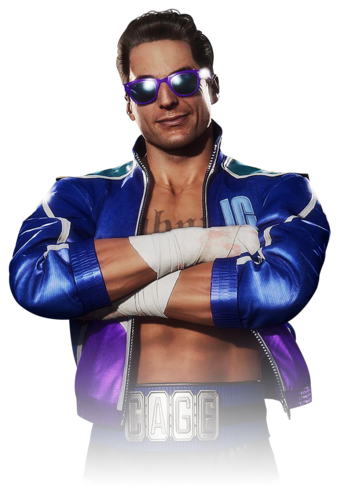

Johnny Cage was a struggling Hollywood action movie star who wanted to get his fame back. Originally, he
entered the Mortal Kombat tournament to display his fighting skills and prove himself to skeptical movie
critics and the movie-viewing public, as they believed Cage was nothing more than an actor who relied
too much on stunts and camera work and was not really a proficient fighter. Eventually, he became one of
the most important defenders of Earth. Despite his materialism, airheadedness, and occasional
immaturity, Cage has always been a brave and loyal warrior for Earthrealm, although his antics
frequently annoy his allies.
Johnny eventually matures considerably by the time of Mortal Kombat X, losing much of his earlier arrogance and airheadedness. In the process, he becomes a more rounded and serious character, although his penchant for humor remains mostly intact. He maintains this persona in Mortal Kombat 11, complemented by the additional presence of his past self, who shares his former cockiness and brash traits.
Johnny eventually matures considerably by the time of Mortal Kombat X, losing much of his earlier arrogance and airheadedness. In the process, he becomes a more rounded and serious character, although his penchant for humor remains mostly intact. He maintains this persona in Mortal Kombat 11, complemented by the additional presence of his past self, who shares his former cockiness and brash traits.